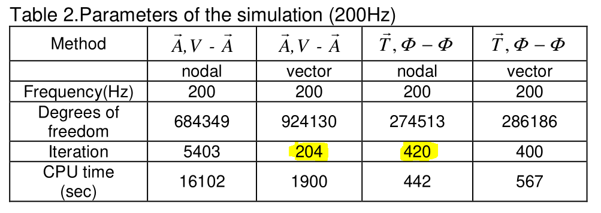
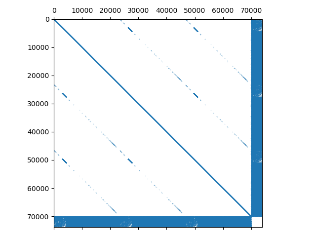
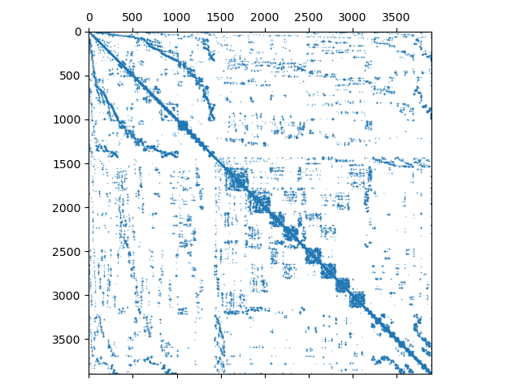

A scalar potential approach for magnetostatics
avoiding the coenergy
Bogdan Radu, Felix Engertsberger, Herbert Egger
Johann Radon Institute for Computational and Applied Mathematics (RICAM)
Austrian Academy of Sciences (ÖAW) Linz, Austria
5th March 2024
SCEE 2024, Darmstadt
Motivation
Compumag TEAM Problem 13:
Given a current density $J$ in the coil and a (nonlinear) material law, compute the magnetic flux density $B$
Given a current density $J$ in the coil and a (nonlinear) material law, compute the magnetic flux density $B$
Maxwell's equations
Let $\Omega\subseteq\mathbb{R}^d$. Then Maxwell's equations for magnetostatics are
$$\begin{alignat*}{2}
\curl H & = J \qquad &&\text{(Ampere Law)} \\[3pt]
\div B &= 0 \qquad &&\text{(Gauss Law)} \\[3pt]
n\cdot B &=0 \qquad &&\text{on }\partial\Omega
\end{alignat*}$$
Let $\Omega\subseteq\mathbb{R}^d$. Nonlinear material law
$$H = \textcolor{red}{f'(B)} := \grad_B f(B) \qquad\text{ or }\qquad B = \textcolor{blue}{g'(H)}:=\grad_H g(H)$$
Here $\textcolor{red}{f}$ and $\textcolor{blue}{g}$ are the energy/coenergy densities.
Possible formulations
Vector potential formulation
Scalar potential formulation
Why use one over the other? Efficiency, convenience $\ldots$
Vector potential formulation
Derivation
$$\begin{alignat*}{2}
\curl H & = J \\[3pt]
\div B &= 0 \\[3pt]
H &= f'(B)
\end{alignat*}$$
$$\begin{alignat*}{2}
\curl H & = J \\[3pt]
\textcolor{red}{\curl A} &\textcolor{red}{ \;= B} \\[3pt]
H &= f'(B)
\end{alignat*}$$
$$\begin{alignat*}{2}
\curl f'(\curl A) = J
\end{alignat*}$$
Assumption: $\Omega$ is simply connected!
Weak formulation, assuming $n\times H = n\times f'(\curl A) = 0$ on $\partial\Omega$:
Find $A\in H^*(\curl,\Omega) = \{u\in L^2(\Omega)^3\;|\; \curl u\in L^2(\Omega)^3,\, \div u = 0\}$ such that
$$\begin{alignat*}{2}
(f'(\curl A), \curl v) = (J,v)\qquad\forall v\in H^*(\curl,\Omega)
\end{alignat*}$$
Existence and uniqueness is guaranteed, if $f$ is smooth and strongly coercive with non-negative, bounded second derivatives.
Vector potential formulation
Find $A\in H^*(\curl,\Omega)$ such that $(f'(\curl A), \curl v) = (J,v)$ for all $v\in H^*(\curl,\Omega)$.
Equivalent to the convex minimization problem
$$\begin{alignat*}{2}
A:=\argmin_\limits{u\in H^*(\curl,\Omega)} \int_\Omega f(\curl u)- J\cdot u
\end{alignat*}$$
Initialize with $A^0=0$. Newton step: $A^{n+1} = A^n + \alpha^n\; \delta A^n$, where $\delta A^n$ solves
Find $\delta A^n\in H^*(\curl,\Omega)$ such that
$$\begin{alignat*}{2}
(f''(\curl A^n)\curl \delta A^n, \curl v) = -\left((f'(\curl A^n),\curl v) - (J,v)\right),\quad\forall v\in H^*(\curl,\Omega)
\end{alignat*}$$
Here the relaxation step $\alpha^n$ is determined by Armijo backtracking.
Number of iterations depends only on the nonlinearity $f$
The same holds on the discrete level, for any conforming subspace $V_h\subseteq H^*(\curl,\Omega)$
Scalar potential formulation
Derivation
$$\begin{alignat*}{2}
\curl H & = J \\[3pt]
\div B &= 0 \\[3pt]
g'(H) &= B
\end{alignat*}$$
$$\begin{alignat*}{2}
\textcolor{blue}{H_J + \grad\psi} &\textcolor{blue}{ \;= H} \\[3pt]
\div B &= 0 \\[3pt]
g'(H) &= B
\end{alignat*}$$
$$\begin{alignat*}{2}
\div g'(H_J + \grad\psi) = 0
\end{alignat*}$$
Assumption: We have an $H_J$ such that $\curl H_J = J$.
Weak formulation, assuming $n\cdot B = n\cdot g'(H_J+\grad\psi) = 0$ on $\partial\Omega$:
Find $\psi\in H^1_*(\Omega) = \{u\in L^2(\Omega)\;|\; \grad u\in L^2(\Omega),\;\int_\Omega u = 0\}$ such that
$$\begin{alignat*}{2}
(g'(H_J + \grad\psi), \grad v) = 0 \qquad\forall v\in H^1_*(\Omega)
\end{alignat*}$$
Existence and uniqueness is guaranteed, if $g$ is smooth and strongly coercive with non-negative, bounded second derivatives.
Vector potential formulation
Find $\psi\in H^1_*(\Omega)$ such that $(g'(H_J + \grad\psi), \grad v) = 0$ for all $v\in H^1_*(\Omega)$.
Equivalent to the convex minimization problem
$$\begin{alignat*}{2}
\psi:=-\argmax_\limits{u\in H^1_*(\Omega)} \int_\Omega g(H_J+\grad u)
\end{alignat*}$$
Initialize with $\psi^0=0$. Newton step: $\psi^{n+1} = \psi^n + \alpha^n\; \delta \psi^n$, where $\delta \psi^n$ solves
Find $\delta \psi^n\in H^1_*(\Omega)$ such that
$$\begin{alignat*}{2}
(g''(H_J+\grad\psi^n)\grad \delta\psi^n, \grad v) = -(g'(H_J + \grad\psi^n), \grad v),\quad\forall v\in H^1_*(\Omega)
\end{alignat*}$$
Here the relaxation step $\alpha^n$ is determined by Armijo backtracking.
Number of iterations depends only on the nonlinearity $g$
The same holds on the discrete level, for any conforming subspace $W_h\subseteq H^1_*(\Omega)$
Comparison
Vector potential
$(f'(\curl A), \curl v) = (J,v)$
(Discrete) Newton step:
$$\begin{alignat*}{2}
(f''(\curl A^n_\textcolor{red}{h})\curl \delta A^n_\textcolor{red}{h}, \curl v_\textcolor{red}{h}) = \ldots
\end{alignat*}$$
where $V_h \subseteq H^*(\curl,\Omega)$ Gauging!
Discrete spaces
$V_h = \N_k\cap H^*(\curl,\Omega)$ (Nedelec)
For $k=0$: #ne $\sim$ $6\cdot$ #np DOFs
Number of iterations
For our example: $\approx 20$
Scalar potential
$(g'(H_J + \grad\psi), \grad v) = 0$
(Discrete) Newton step:
$$\begin{alignat*}{2}
(g''(H_J+\grad\psi^n_\textcolor{red}{h})\grad \delta\psi_\textcolor{red}{h}^n, \grad v_\textcolor{red}{h}) = \ldots
\end{alignat*}$$
where $W_h \subseteq H^1_*(\Omega)$
Discrete spaces
$W_h = P_{k+1} \cap H^1_*(\Omega)$
For $k=0$: #np DOFs
Number of iterations
For our example: $\approx 40$
Comparison
The different number of iterations is a well documented fact:
- Dular et. al. (2021). Finite-Element Formulations for Systems With High-Temperature Superconductors
- Kovács, Kuczmann (2011). Solution of the TEAM workshop problem No. 7 by the Finite Element Method

Hypothesis: In general, for ferromagnetic materials, the coenergy-based formulations require more iteration steps than the energy-based formulations
Fact: Vector-potential formulation is more costly than the scalar-potential.
Question: Can we get the best of both worlds, i.e. having to solve small systems and have a low number of iterations?
A new idea ...
Vector potential
Minimization problem
$$\begin{alignat*}{2}
A:=\argmin_\limits{u\in H^*(\curl,\Omega)} \int_\Omega f(\curl u)- J\cdot u
\end{alignat*}$$
Scalar potential
Minimization problem
$$\begin{alignat*}{2}
\psi:=-\argmax_\limits{u\in H^1_*(\Omega)} \int_\Omega g(H_J+\grad u)
\end{alignat*}$$
Mixed scalar potential
$$\begin{alignat*}{2}
B:=\argmin_\limits{u} \int_\Omega f(u)-H_J\cdot u\,\quad\, \text{s.t. } \div u = 0
\end{alignat*}$$
$$\begin{alignat*}{2}
(B,\psi):=\argmin_\limits{u}\;\argmax_\limits{\psi} \int_\Omega f(u)- H_J \cdot u-\grad\psi \cdot u
\end{alignat*}$$
Direct derivation
$$\begin{alignat*}{2}
\curl H & = J \\[3pt]
\div B &= 0 \\[3pt]
H &= f'(B)
\end{alignat*}$$
$$\begin{alignat*}{2}
\textcolor{blue}{H_J + \grad\psi} &\textcolor{blue}{ \;= H} \\[3pt]
\div B &= 0 \\[3pt]
H &= f'(B)
\end{alignat*}$$
$$\begin{alignat*}{2}
f'(B) -\grad\psi&= H_J \\
\div B &= 0
\end{alignat*}$$
A mixed scalar potential formulation
Weak formulation, assuming $n\cdot B = 0$ on $\partial\Omega$:
Find $(B,\psi)\in L^2(\Omega)^3\times H^1_*(\Omega)$ such that
$$\begin{alignat*}{2}
(f'(B), q)-(\grad\psi,q) &= (H_J,q)\qquad &&\forall q\in L^2(\Omega)^3 \\
(B,\grad v) &=0 &&\forall v\in H^1_*(\Omega)
\end{alignat*}$$
Find $(B_h,\psi_h)\in Q_h\times V_h \subseteq L^2(\Omega)^3\times H^1_*(\Omega)$ such that
$$\begin{alignat*}{2}
(f'(B_h), q_h)_h-(\grad\psi_h,q_h) &= (H_J,q_h)\qquad &&\forall q_h\in Q_h \\
(B_h,\grad v_h) &=0 &&\forall v_h\in V_h
\end{alignat*}$$
Here $V_h = P_{k+1}\cap H^1_*(\Omega)$ and $Q_h = P_k^3\cap L^2(\Omega)^3$
Note : $\psi$ is approximated in the same space as for the scalar potential formulation.
Initialize with $(B_h^0,\psi_h^0)=0$. In each newton step, solve for the update $(\delta B_h^n,\delta\psi_h^n)$
Find $(\delta B_h^n,\delta \psi_h^n)\in Q_h\times V_h$ such that
$$\begin{alignat*}{2}
(f''(B_h^n)\delta B_h^n, q_h)_h-(\grad\delta\psi_h^n,q_h) &= -\left((f'(B_h^n), q_h)_h-(\grad\psi_h^n,q_h)-(H_J,q_h)\right)\qquad &&\forall q_h\in Q_h \\
(\delta B_h^n,\grad v_h) &= -(B_h^n,\grad v_h) &&\forall v_h\in V_h
\end{alignat*}$$
Number of iterations: about 20!
Problem : saddle point structure... how can we solve it efficiently?
A mixed scalar potential formulation
Each Newton step has the form
$$\begin{alignat*}{2}
(f''(B_h^n)\delta B_h^n, q_h)_h-(\grad\delta\psi_h^n,q_h) &= (r_1,q_h), \qquad\forall q_h\in \textcolor{red}{Q_h\subseteq L^2(\Omega)^3} \\
(\delta B_h^n,\grad v_h) &= (r_2,v_h), \qquad\forall v_h\in \textcolor{red}{V_h\subseteq H^1(\Omega)}
\end{alignat*}$$
Let us look at the system of equations in more detail...
$$\begin{alignat*}{2}
\begin{pmatrix}
\ttA & -\ttB^\top \\
\ttB & \ttZ \\
\end{pmatrix}
\begin{pmatrix}
\delta b^n\\
\delta \psi^n\\
\end{pmatrix}=
\begin{pmatrix}
\ttr_1\\
\ttr_2\\
\end{pmatrix}
\end{alignat*}$$

Schur complement:
$$\begin{alignat*}{2}
-(\ttB^\top\ttA^{-1}\ttB)\;\delta\psi^n = \ttB\ttA^{-1}\ttr_1 -\ttr_2
\end{alignat*}$$

A mixed scalar potential formulation
In the linear case, the matrices for the scalar potential and the new mixed formulation are the same! What makes the nonlinear case so different?
The Newton directions are different!
Scalar potential
$$\begin{alignat*}{2}
\ttK\;\delta\psi^n = \ttr_3
\end{alignat*}$$
$$\begin{alignat*}{2}
&\div g''(H_J + \grad\delta\psi^n_h) \\
&\qquad= -\div g'(H_J + \grad\psi^n_h)
\end{alignat*}$$
Mixed Scalar potential
$$\begin{alignat*}{2}
-(\ttB^\top\ttA^{-1}\ttB)\;\delta\psi^n = \ttB\ttA^{-1}\ttr_1 -\ttr_2
\end{alignat*}$$
$$\begin{alignat*}{2}
&\div f''(\delta b_h^n)^{-1}\grad\delta\psi^n_h \\
&\qquad= -\div f''(\delta b_h^n)^{-1}(f'(b_h^n)-\grad\psi_h^n -H_J)
\end{alignat*}$$
These are to be understood weakly, in $H^{-1}$.
Numerical experiment
TODO : graph mit Vergleich der Iterationen, Zeiten ...!
Summary